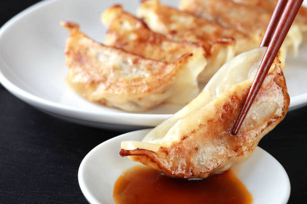
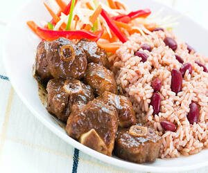

World's Best Flavors
At Heritage Kitchen, we celebrate culinary traditions from around the world. Explore family recipes, discover the history behind your favorite dishes, and share your own culinary heritage with the community.
Our Recipes
Italian Lasagna
A traditional family recipe with layers of pasta, cheese, and rich meat sauce.
Ingredients:
- Pasta sheets
- Ground beef
- Tomato sauce
- Ricotta cheese
- Mozzarella cheese
- Parmesan cheese
- Herbs and spices
Procedure:
1. Cook the ground beef until browned.
2. Layer pasta sheets, meat sauce, ricotta, and mozzarella in a baking dish.
3. Repeat layers until ingredients are used.
4. Top with Parmesan and bake at 375°F for 45 minutes.
Chinese Jiao Zi
Fresh and delicious gyoza made with pork and Chinese cabbage.
Ingredients:
- Dumpling wrappers
- Ground pork
- Chopped Chinese cabbage
- Garlic and ginger
- Soy sauce
- Green onions
Procedure:
1. Mix pork, cabbage, garlic, ginger, and seasonings in a bowl.
2. Place a spoonful of filling in each wrapper and fold.
3. Steam or pan-fry until cooked through.
Caribbean Rice and Beans
Spicy and flavorful Caribbean recipe of rice, beans, and meat.
Ingredients:
- White rice
- Red beans
- Coconut milk
- Onion and garlic
- Bell pepper
- Spices (thyme, allspice)
Procedure:
1. Sauté onion and garlic until soft.
2. Add beans, rice, coconut milk, and spices.
3. Cook until rice is tender and liquid is absorbed.
Persian Jujeh Kebab

Grilled chicken served with grilled tomatoes, saffron rice, and butter.
Ingredients:
- Chicken pieces
- Saffron
- Onion
- Lemon juice
- Spices (turmeric, cumin)
- Tomatoes
Procedure:
1. Marinate chicken with saffron, lemon juice, and spices for a few hours.
2. Skewer and grill until cooked through.
3. Serve with grilled tomatoes and saffron rice.